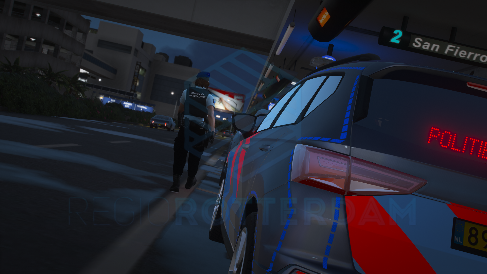

Home
Informatie
Handboek
Leidinggevenden
Contact

Welkom bij de KMar RP Server
De plek voor spannende missies en avonturen.
Over de KMar in Regio Rotterdam
Hier komt informatie over wat we doen in de RP server.
Recente Activiteiten
Nieuws/Updates
We hebben het handboek afgemaakt en deze kan je vinden onder het kopje 'Handboek'. Zorg er voor dat je deze hebt gelezen voor dat je volledig in dienst treed.